C'est quoi
L'ingénieur est un programme sur ton PC. Il lit les données du jeu et te parle dans ton casque : il t'avertit des voitures plus rapides, te dit quand rentrer au stand, ce qu'on change à l'arrêt et où tu perds du temps. Il répond à tes questions à la voix – maintiens le bouton du volant, parle, relâche.
Le mur des stands est une page web (PC ou téléphone). Toute l'équipe voit en direct l'état de la voiture, les rivaux, la météo et le planning des relais, et peut envoyer au pilote des messages que l'ingénieur lit à voix haute.
Fonctionne sur tous les circuits, avec toutes les voitures et catégories de Le Mans Ultimate. Tu peux rouler seul (mode Solo) ou en équipe.
Ce qu'il te faut
- Windows 10 ou 11 et Le Mans Ultimate.
- Un casque avec micro et un bouton libre sur le volant (ou une touche du clavier).
- Internet (la voix, la reconnaissance vocale et le mur des stands fonctionnent en ligne).
- Une clé Groq gratuite – sans elle, l'IA ne fonctionne pas (meilleure reconnaissance vocale, réponses de l'IA, traduction des messages moins courants) ; comment l'obtenir : IA.
Installation (5 minutes)
- Télécharge le paquet
PitWallCrew_….zipdepuis le post FR Mods sur Patreon. Avant de décompresser : clic droit sur le fichier → Propriétés → coche Débloquer → OK (sinon Windows peut bloquer les fichiers). - Décompresse-le, par ex. dans
Documents– tu obtiens un dossierPit Wall Crewavec INSTALL.bat et un dossierProgram(fichiers du programme, inutile de l'ouvrir). - Double-clique sur INSTALL.bat (l'installateur). Il télécharge le nécessaire (quelques minutes), demande l'équipe, le micro et le bouton radio, et crée une icône Pit Wall Crew sur le bureau.
- Dans LMU, une fois : Settings → Gameplay → Enable Plugins = ON (sans cela le programme ne voit pas les données du jeu).
La fenêtre de l'appli
L'icône Pit Wall Crew ouvre l'appli. L'ingénieur démarre tout seul et commence à parler dès que tu lances le jeu et que tu vas en piste.
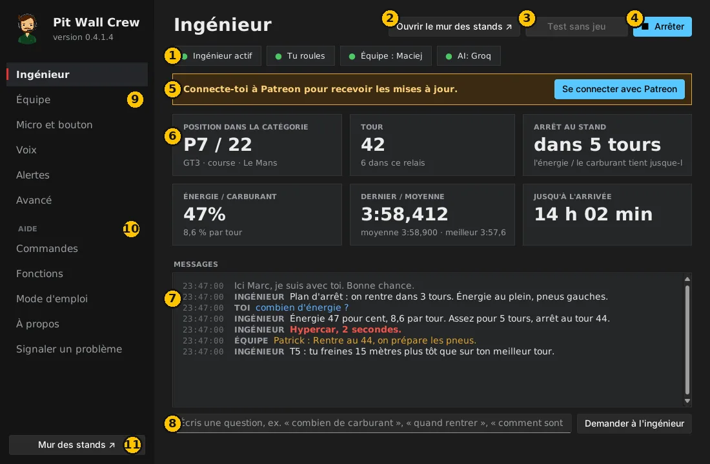
- État : l'ingénieur tourne-t-il, voit-il le jeu (« Tu roules » ou spectateur quand un coéquipier conduit), connexion équipe et IA. Vert = OK.
- Test sans jeu – une course simulée. Vérifie la voix, le micro et le mur des stands sans lancer LMU.
- Démarrer / Arrêter l'ingénieur.
- Chiffres clés : position, tour, tours avant l'arrêt, énergie ou carburant, chronos, temps jusqu'à l'arrivée.
- Messages – tout ce qu'a dit l'ingénieur, tes questions et les messages de l'équipe. Rouge = urgent.
- Champ de question – écris une question au lieu de parler.
- Réglages – équipe, micro, voix, alertes (voir plus bas).
- Aide – commandes, fonctions, mode d'emploi, à propos et Signaler un problème.
- Mur des stands – ouvre la page de l'équipe dans le navigateur.
Réglages
Après chaque changement, clique sur Enregistrer et redémarrer (en bas à droite).
Équipe
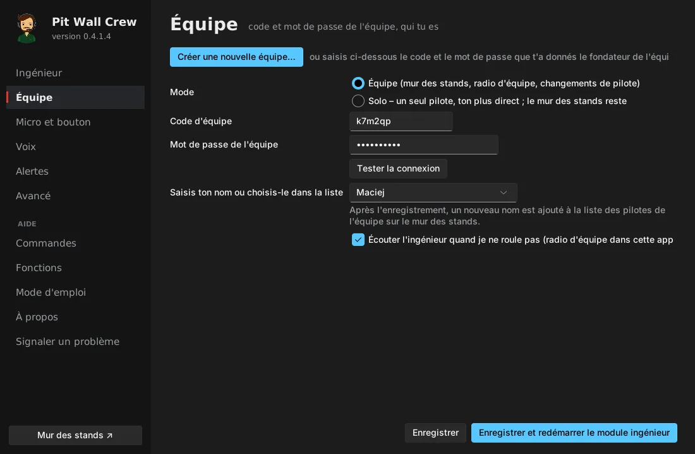
- Solo – tu roules seul : rien d'autre à saisir. Le mur des stands fonctionne quand même comme ta vue en direct.
- Équipe – une personne clique sur Créer une nouvelle équipe… (nom et mot de passe) et reçoit un code d'équipe de 6 caractères. Les autres saisissent ce code et le mot de passe, cliquent sur Tester la connexion et choisissent qui ils sont.
- Partage le code et le mot de passe uniquement en privé – qui les connaît voit l'état de la voiture et peut écrire au pilote.
- Écouter l'ingénieur quand je ne roule pas – quand un coéquipier conduit, tu entends son ingénieur (radio d'équipe).
Micro et bouton
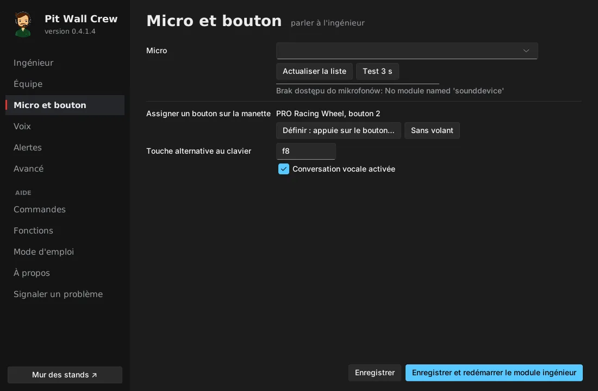
- Choisis le micro et clique sur Test 3 s – dis quelque chose et vérifie que le niveau bouge.
- Définir : appuie sur le bouton… puis appuie sur le bouton du volant qui servira à parler. Une touche du clavier marche aussi.
Voix
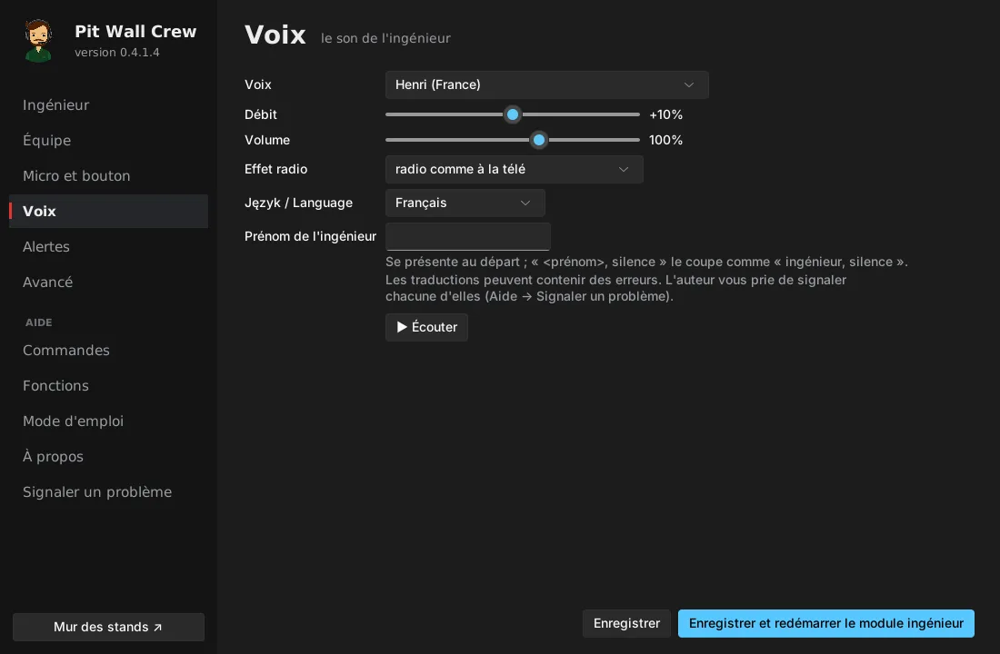
- Voix, débit, volume, effet radio, langue et prénom de l'ingénieur. ▶ Écouter joue un exemple.
- Si tu lui donnes un prénom (par ex. Marc), il se présente et « Marc, silence » le fait taire.
Alertes
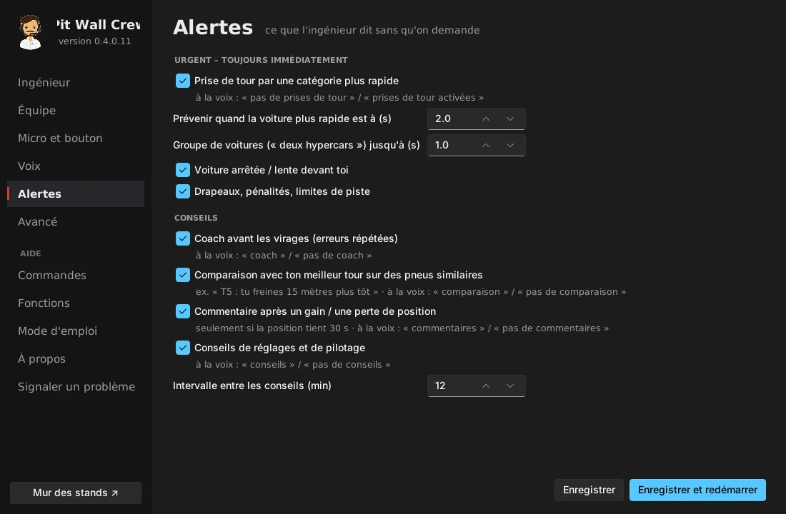
Ce que l'ingénieur dit de lui-même : prises de tour par les catégories plus rapides (et à partir de combien de secondes), voitures arrêtées, drapeaux, coaching avant les virages, comparaison avec ton meilleur tour, commentaires après les dépassements, conseils de réglages. Tout s'active et se désactive à la voix en roulant (par ex. « pas de coach »).
Avancé
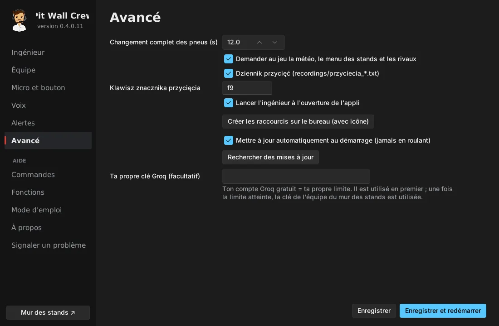
Temps d'un changement complet de pneus, démarrage automatique de l'ingénieur, raccourcis sur le bureau, mises à jour et ta propre clé Groq (facultative – ta propre limite).
Parler à l'ingénieur
Maintiens le bouton, parle, relâche. Un appui interrompt aussi ce que dit l'ingénieur.
Exemples : « combien de carburant ? », « quand je rentre ? », « quels pneus on change ? », « qui est devant ? », « où je perds ? », « météo ? », « quand l'hypercar va me prendre un tour ? », « silence » (silence total jusqu'au prochain appui), « urgent seulement », « répète ».
La liste complète est dans l'appli : Aide → Commandes.
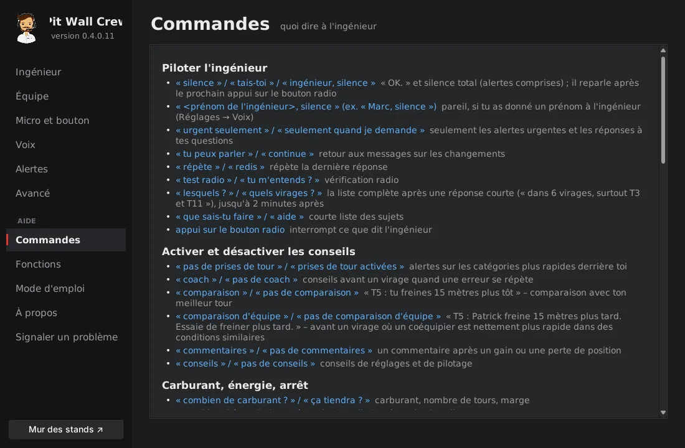
Une question que le programme ne connaît pas part à l'IA (avec une clé Groq) avec les données de course.
IA – clé Groq gratuite (une fois, 3 minutes)
- Va sur console.groq.com et connecte-toi – le plus simple avec un compte Google. Le compte est gratuit.
- À gauche : API Keys → Create API Key, entre un nom (par ex.
PWC) → Submit. - Copie la clé tout de suite (elle commence par
gsk_) – Groq ne l'affiche qu'une fois. La clé est gratuite, avec une limite quotidienne. - Équipe (une personne suffit) : mur des stands → Équipe → IA de l'équipe (Groq) → colle → Enregistrer la clé. La clé sert à toute l'équipe et seuls ses membres la voient.
- Tu roules seul ou tu veux ta propre limite : appli → Avancé → Ta propre clé Groq → colle → Enregistrer et redémarrer.
- C'est prêt quand la page Ingénieur affiche IA : Groq en vert.
N'envoie jamais la clé dans un chat – colle-la toi-même.
Mises à jour et Patreon
- Les nouvelles versions sont pour les mécènes payants de FR Mods sur Patreon.
- Dans l'appli, sur la page Ingénieur, clique sur Se connecter avec Patreon. Connecte-toi à Patreon dans le navigateur et clique sur Allow, puis reviens dans l'appli. Il ne reste que le bouton Se déconnecter de Patreon.
- Les mises à jour s'installent au démarrage de l'appli – jamais pendant que tu roules. Tes réglages sont conservés.
- Les testeurs entrent plutôt un code de l'auteur : Avancé → Code testeur → Enregistrer et redémarrer.
Sans Patreon ni code testeur, le programme continue de fonctionner, sans nouvelles versions.
Mur des stands
Ouvre-le avec le bouton Mur des stands de l'appli ou sur zepansrpl-creator.github.io/Pit-Wall-Crew (connexion avec le code et le mot de passe de l'équipe ; ton téléphone les retient). Le choix de la langue est en haut, et le bouton ☀ / ☾ passe de l'apparence claire à sombre.
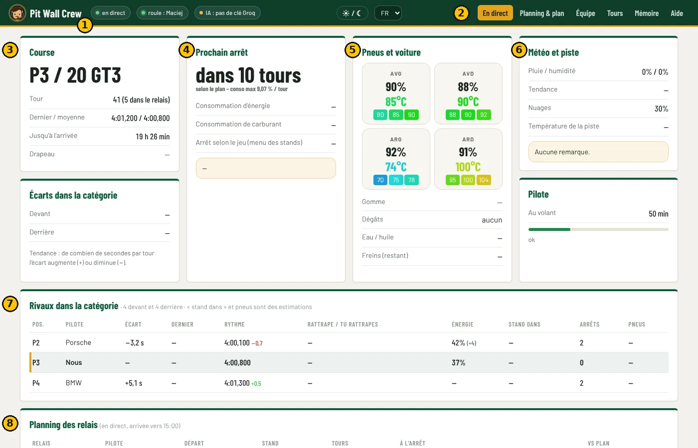
- État : les données sont-elles en direct, qui conduit, l'IA fonctionne-t-elle.
- Onglets : En direct, Planning & plan, Équipe, Tours, Mémoire, Aide.
- Course : position dans la catégorie, tour, chronos, temps jusqu'à l'arrivée, drapeau.
- Prochain arrêt : dans combien de tours, consommation d'énergie et de carburant, ce qu'on fait à l'arrêt.
- Pneus et voiture : usure et températures de chaque pneu, dégâts, moteur, freins.
- Météo et piste : pluie, humidité, nuages, température de piste et remarques de l'ingénieur.
- Rivaux de la catégorie : écarts, rythme, qui rattrape qui, énergie, arrêt prévu.
- Planning des relais : qui conduit, quand a lieu le changement, ce qui se passe à l'arrêt, de combien de minutes le planning a bougé par rapport au plan. Sans plan pour aujourd'hui, il est créé automatiquement pour le pilote en piste – d'après la durée de la course et les pneus disponibles dans le jeu.
Plus bas se trouvent la carte du circuit avec toutes les voitures et la radio d'équipe : « Au pilote » (l'ingénieur lit le message), « Demander à l'ingénieur » (réponse à la voix), « Demander (texte seul) », « En mémoire ».
Sur téléphone
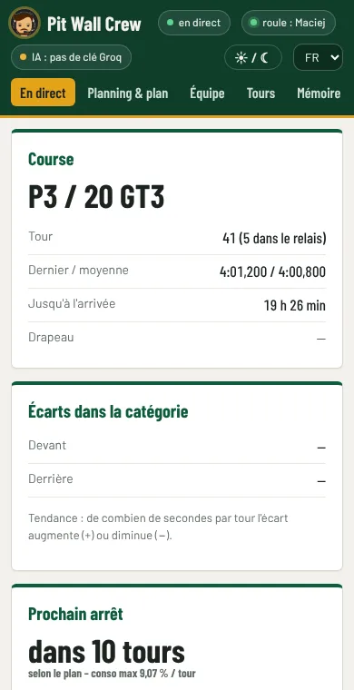
Onglet Équipe
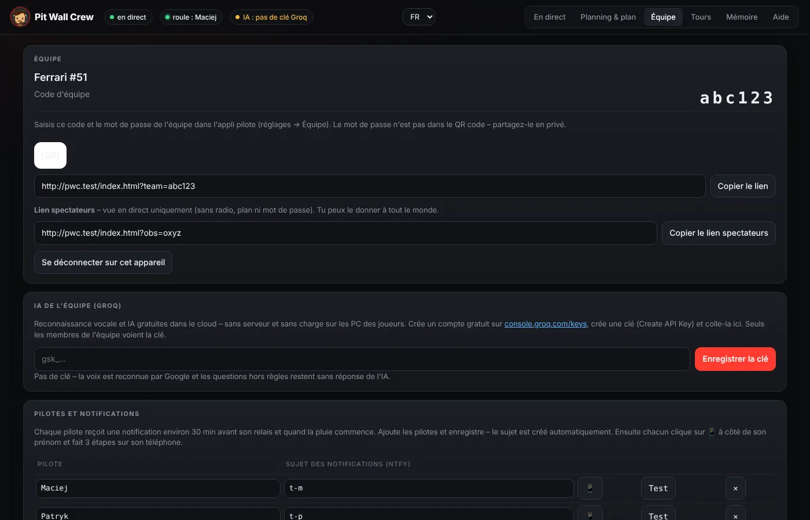
Code d'équipe et QR code pour le mur, pilotes avec leurs sujets de notification, la clé Groq et un lien spectateurs – vue en direct seulement, sans radio ni plan ; tu peux le donner à n'importe qui.
Planning & plan (avant une course longue, une personne)
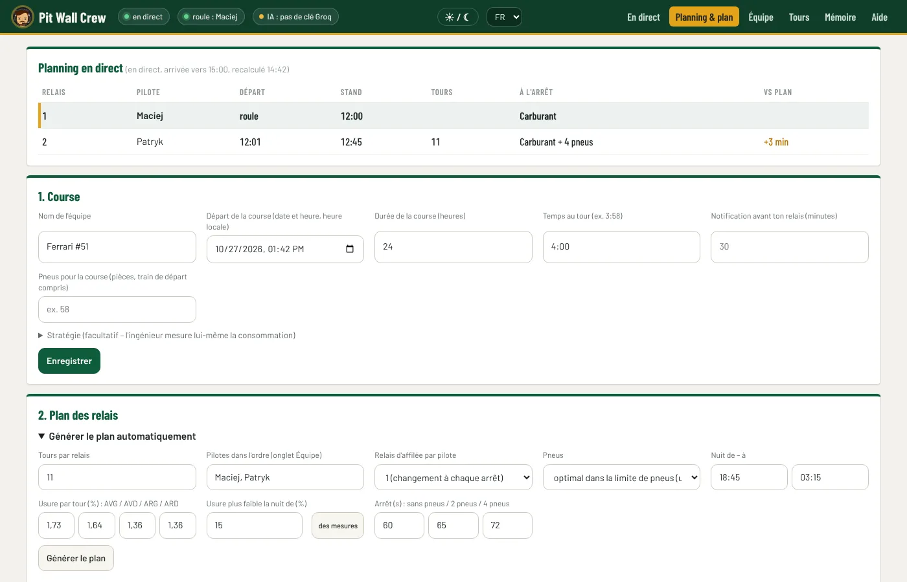
- 1. Course : date et heure du départ, durée, temps au tour, pneus pour la course → Enregistrer.
- 2. Plan des relais → Générer le plan automatiquement : tours par relais, ordre des pilotes, usure des pneus (des mesures remplit l'usure mesurée pendant vos sessions), temps d'arrêt → Générer le plan. Le programme répartit les pneus pour qu'ils s'usent le plus régulièrement possible.
- Ajuste le tableau si besoin : pilote dans la liste, tours, Gauche / Droite = changer les pneus de ce côté → Enregistrer le plan. Le compteur indique si vous restez dans l'allocation de pneus.
Pendant la course, le planning se recalcule d'après le rythme réel. L'ingénieur te fait rentrer et change les pneus selon le plan (sauf si un pneu ne tient pas ou si l'énergie manque). Le plan s'applique à une course de la durée saisie dans « 1. Course ».
Notifications sur téléphone (chaque pilote, 2 minutes)
- Installe l'appli gratuite ntfy (Google Play / App Store).
- Sur le mur des stands : Équipe → clique sur 📱 à côté de ton prénom – ton sujet et un QR code apparaissent.
- Dans ntfy, touche +, saisis le sujet et Subscribe (ou scanne le QR code).
- Clique sur Test à côté de ton prénom – « Pit Wall Crew – test » arrive sur ton téléphone.
La notification arrive environ 30 minutes avant ton relais, une deuxième si le relais bouge de 10 minutes ou plus, et quand il commence à pleuvoir.
Course longue (par ex. 24 h)
- Le pilote en piste garde Pit Wall Crew lancé pendant tout le relais – son appli envoie les données au mur et les notifications.
- Les autres peuvent éteindre le jeu, l'appli et le PC. Après la notification, lance le PC, LMU et Pit Wall Crew avant de monter dans la voiture.
- Le plan, le planning, les messages, la mémoire d'équipe et le briefing de relais sont dans la base de l'équipe – le programme les récupère tout seul.
Répétition avant la course (15 minutes)
- Tout le monde lance Pit Wall Crew – Équipe et IA : Groq en vert.
- Un pilote clique sur Test sans jeu. Les autres ouvrent le mur des stands – les données doivent être « en direct ».
- Le pilote demande à la voix « combien de carburant ? » – tout le monde entend la réponse.
- Envoie « Au pilote » depuis le mur – l'ingénieur lit le message.
Si quelque chose ne marche pas
| Symptôme | Que faire |
|---|---|
| « En attente de LMU » alors que le jeu tourne | LMU : Settings → Gameplay → Enable Plugins = ON, puis relance le jeu. |
| L'ingénieur ne m'entend pas | Micro et bouton → Test 3 s. Vérifie la sourdine du casque et Windows → Confidentialité → Microphone. |
| « Mauvais code ou mot de passe d'équipe » | Équipe → corrige → Tester la connexion → Enregistrer. |
| Mur des stands : « pas de données du jeu » | L'appli du pilote doit tourner avec « Équipe » en vert. |
| « IA : Groq – mauvaise clé » | Colle à nouveau la clé (mur des stands → Équipe → IA de l'équipe). |
| Chaque message s'entend deux fois | Le programme tourne deux fois : ferme l'appli, termine « pythonw » dans le Gestionnaire des tâches, relance une fois. |
| Pas de notifications | Départ et pilotes dans le plan, sujet dans ntfy, bouton Test ; l'appli tourne sur le PC de quelqu'un. |
| Le jeu saccade | Souvent pas assez de mémoire graphique : baisse les textures, les voitures visibles et les ombres, ferme les autres programmes. |
| Windows bloque des fichiers | Avant de décompresser : clic droit sur le paquet → Propriétés → Débloquer. |
Signaler un problème ou une suggestion
Dans l'appli : Aide → Signaler un problème, sur le mur des stands : l'onglet Aide. Ça va directement à l'auteur. Avec ton accord, l'appli peut envoyer automatiquement un rapport en cas de plantage (sans voix, clés ni mots de passe) – tu l'actives ou le désactives sur la même page. Détails : Confidentialité.
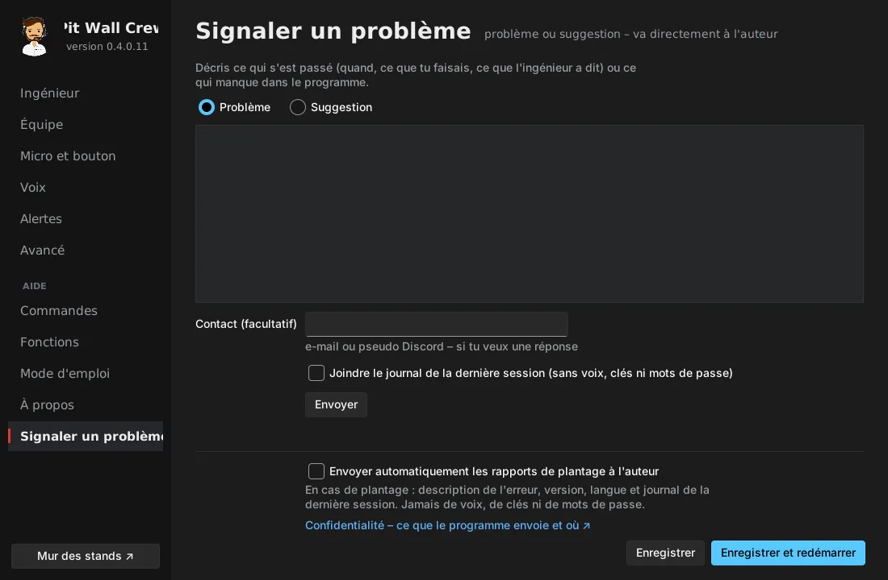